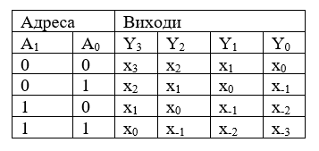
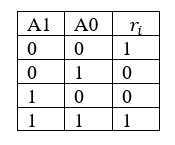
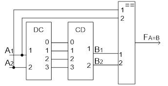

Основні комбінаційні вузли ЕОМ
Шифратори
Шифратор (кодер) здійснює перетворення десяткових чисел в двійкову систему числення.
Шифратори широко використовуються в різних пристроях введення інформації у цифрові системи. Такі пристрої постачаються клавіатурою, кожна клавіша якої пов’язана з визначеним входом шифратора. При натисканні обраної клавіші подається сигнал на відповідний вхід шифратора, та на його виході з’являється двійкове число, яке відповідає символу на клавіші [3].
Символічне позначення шифратора приведено на рисунку 8 . Даний шифратор перетворює десяткові числа 0, 1, 2, 3, 4, 5, 6, 7 в представлення двійкової системи числення. Символ CD створюється з букв, що входять в англійське слово coder. Зліва показані 8 входів, які позначені десятковими цифрами, праворуч – виходи шифратора; цифрами 1, 2, 4 позначені коефіцієнти двійкових розрядів, які відповідають окремим виходам.
Для синтезу шифратора використовують алгоритм синтезу комбінаційних схем:
- формуються логічні умови роботи у вигляді таблиці істинності функції, яка відображає конкретні задачі пристрою;
- за таблицею істинності складається ДДНФ логічної функції;
- здійснюється мінімізація логічної функції ;
- за спрощеною логічною формулою будується функціональна схема пристрою, причому мінімальному числу та однорідності логічних елементів надається перевага.
Таким чином за алгоритмом, по-перше, складаємо таблицю істинності, яка реалізує роботу шифратора .
Таблиця 1 - Таблиця істинності роботи шифратора
По-друге – за таблицею істинності складемо логічні функції:
Мінімізація даних функцій не потрібна. Тому за даними функціями можна побудувати функціональну схему шифратора. Дана схема зображена на рисунку8.
Рисунок 8 – Лінійний шифратор
Відкрити презентацію "Шифратори"
Відкрити презентацію "Комбінаційні схеми"
Дешифратори
Дешифратором називається функціональний вузол комп’ютера, призначений для перетворення кожної комбінації вхідного двійкового коду в керуючий сигнал лише на одному із своїх виходів. У загальному випадку дешифратор має n однофазних входів (іноді 2n парафазних) і m = 2n виходів, де n - розрядність (довжина) коду, який дешифрується. Дешифратор з максимально можливим числом виходів m = 2n називається повним [3].
Дешифратори класифікуються за такими ознаками:
- способом структурної організації - одноступеневі (лінійні) і багатоступеневі, в тому числі пірамідальні та прямокутні (матричні);
- форматом вхідного коду - двійкові, двійково-дестякові;
- розрядністю коду, який дешифрується - 2, 3.
- формою подачі вхідного коду - з однофазними і пара фазними входами;
- кількістю виходів - повні і неповні дешифратори;
- видом вхідних стробіруючих сигналів - в прямому, або інверсному значеннях;
- типом використовуваних логічних елементів - І, НЕ, АБО, НЕ І, НЕ АБО і т.д.
До основних характеристик дешифраторів відносять: число ступенів (каскадів) дешифрації, кількість використаних логічних елементів або мікросхем, загальне число входів логічних елементів, час дешифрації і споживану потужність.
Умовне позначення дешифратора зображено на рисунку 9, а)- на функціональних схемах; б), в) - на принципіальних схемах[4].
Логічна функція дешифратора позначається буквами DC (decoder). Мітки лівого додаткового поля в умовному позначенні відображають десяткові ваги вхідних змінних, а мітки правого додаткового поля відповідають десятковим еквівалентам вхідних комбінацій двійкових змінних. У схему дешифраторів вбудовуються один або два стробіруючих (дозволяючих) входи, наприклад, W (рис.2б). За допомогою сигналу на вході W визначається момент спрацювання дешифратора; крім того, вхід W використовується для нарощування розрядності вхідного коду. На практиці повний дешифратор на n входів і m виходів для стислості називають дешифратором „з n в /m”, або „n —- m”. Наприклад, дешифратор „з 3 у 8” - активізується одна з восьми вихідних ліній.
В комп’ютерах дешифратори використовують для виконання таких операцій:
- дешифрації коду операції, записаного в регістр команд процесора, що забезпечує вибір погрібної мікропрограми;
- перетворення коду адреси операнда в команді в керуючі сигнали вибору заданої комірки нам’яті в процесі записування або читання інформації;
- забезпечення візуалізації на зовнішніх пристроях;
- реалізації логічних операцій та побудови мультиплексорів і демультиплексорів.
Синтез дешифратора здійснюється за аналогією синтез шифратора.
Таблиця істинності дешифратора « з 2 в 4»:
За таблицею істинності отримуємо вихідні функції та будуємо схему дешифратора (рисунок 10)
Рисунок 10 – Лінійний дешифратор
Умовне позначення дешифратора на мікросхемі К555ИД1 з десятьма виходами для дешифрування одного розряду двійково-десяткового коду 8421 і частина його принципової схеми наведені на рисунку 11[4]. Будь-якому вхідному двійковому коду відповідає низький рівень тільки на одному виході, а на всіх інших зберігається високий рівень.
Рисунок 11 - Дешифратор на мікросхемі К555ИД1: а) умовне графічне позначення; б) принципова схема
Дешифратори входять в усі серії мікросхем ТТЛ і КМОН. Наприклад, дешифратор К555ИД4 (два дешифратори в корпусі, рисунок 5,б) перетворює двійковий код в код «1 з 4», К555ИД1 і К176ИД1 в код «1 з 10», К555ИДЗ (рисунок5, а) - в код «1 з 16» [4].
Дешифратор на мікросхемі К555ИД1 призначений для роботи з декадними газорозрядними індикаторами. Вихідні сигнали цієї мікросхеми відрізняються від ТТЛ рівня і тому для під’єднання до неї інших мікросхем потрібно застосовувати додаткові прилади узгодження.
Мікросхема К555ИД4 складається з двох дешифраторів на 4 з об'єднаними адресними входами (виводи 3 і 13) і роздільними входами стробування.
Стробуванням називається виділення сигналу в певний момент часу. У даному випадку - це поява вихідного сигналу в моменти, коли на входах стробування є сигнал дозволу. Якщо на обох входах А1 і А2 будуть низькі рівні, то на виході верхнього за схемою дешифратора, номер якого відповідає еквіваленту вхідного коду, буде також низький рівень. Для нижнього (за схемою) дешифратора необхідно виконання умов: А3=1 і А4=0.
Дешифратор на мікросхемі К555ИДЗ має чотири входи для прийому чисел в коді 8421 і 16 виходів [7].
Рисунок 12 – Мікросхеми дешифраторів: а) К555ИДЗ; б) К555ИД4
Перетворювачі кодів
Перетворювачем коду називається цифровий функціональний вузол, який призначений для перетворення двійкового коду з однієї форми в іншу.
Для представлення інформації використовують різноманітні двійкові та двійково-десяткові коди: прямий, зворотній, доповняльний та їх модифікації, циклічні коди та інші. Існує багато кодів, які забезпечують:
- простоту виконання арифметико-логічних операцій;
- зручність переводу чисел з десяткової системи в двійковий код;
- надійність виконання заданих алгоритмів функціонування та ефективний контроль результатів обчислень;
- зменшення апаратних витрат при побудові цифрових схем.
Перетворювач кодів є комбінаційною схемою. Дослідження роботи перетворювача кодів зводиться до аналізу роботи комбінаційної схеми.
Задача аналізу комбінаційної схеми полягає у визначенні функції заданої схеми і показників її якості. В окремому випадку задача аналізу полягає у визначенні реакції схеми на задані набори вхідних сигналів (змінних) [4].
Функціонування комбінаційної схеми можна виразити у вигляді таблиці істинності, що має 2n рядків і (n + m) стовпців (n стовпців для входів і m стовпців для виходів схеми). Для перетворювачів з двійкового коду 8421 в код з вагою розрядів 2421та з коду Грея в двійковий код 8421 функціонування представлено в таблиці2[2].
Таблиця 2.
Мультиплексори
Синтез мультиплексорів
Пристрій, який здійснює вибірку одного з декількох входів та підключає його до свого виходу, називається мультиплексором[2]. Мультиплексор має декілька інформаційних входів (D0, D1,,…), адресні входи (А0, А1, …), вхід для подачі стробіруючого сигналу С та один вихід Q. на рисунку 13 показано символічне зображення мультиплексору з чотирма інформаційними входами.
Рисунок 13 - Символічне зображення мультиплексора
Кожному інформаційному входу мультиплексори присвоюється номер, якій зветься адресою. При подачі стробіруючого сигналу на вхід С мультиплексор обирає один з входів, адреса якого задається двійковим кодом на адресних входах, та підключає його до виходу.
Таким чином, якщо подавати на адресні входи адресу різних інформаційних входів, можна передавати цифрові сигнали з цих входів на вихід Q.
Кількість інформаційних входів nінф., а кількість адресних входів nадр. Пов’язані співвідношенням: nінф.= 2nадр..
Функціонування мультиплексора визначена таблицею істинності.
Таблиця 3
При відсутності стробіруючого сигналу (С=0) зв'язок між інформаційними входами та виходами відсутній (Q=0). При подачі стробіруючого сигналу (С=1) на вихід передається логічний рівень того з інформаційних входів Di, номер якого у двійковій формі заданий на адресних входах. Таким чином, при адресі А1А0 = 112 = 310 на вихід Q буде передаватись сигнал інформаційного входу з адресою 310, тобто D3.
За таблицею істинності можна записати такий логічний вираз для виходу Q, якій реалізує роботу мультиплексора:
Схема, що зображена на рисунку 14, побудована за даним виразом та повністю реалізує роботу мультиплексора[2].
Рисунок 14 – Схема мультиплексора на логічних елементах
На рисунку 15 зображена схема мультиплексора з використанням дешифратора. Дешифратор використовується для розподілу адресних входів.
Рисунок 15 – Схема мультиплексора на логічних елементах та дешифраторі
Відкрити лабораторну "Мультиплексори"
Використання мультиплексорів
Всі цифрові комбінаційні вузли є багатофункціональними, тобто вони можуть виконувати функції, спеціально для них не передбачені. У ряді випадків ці вузли забезпечують деякі схемні переваги перед спеціалізованими, призначеними для реалізації цих функцій. Мультиплексор є найбільш характерним багатофункціональним вузлом.
1. Використання мультиплексора за прямим призначенням
- мультиплексування багаторозрядної адреси мікросхем пам'яті; В деяких випадках, коли потрібно передавати на виходи багато розрядні вхідні данні в паралельної формі, використовують паралельне включення мультиплексорів за числом розрядів даних, що передаються. Максимальна кількість інформаційних входів мультиплексорів, виконаних у вигляді інтегральних схем, дорівнює 16. Якщо потрібно побудувати мультиплексорний пристрій з більшою кількістю входів, можна об’єднати мультиплексори у схему так званого мультиплексорного дерева (рисунок 16) [2, 4].
Рисунок 16 – Схема мультиплексорного дерева
- мультиплексорне управління багаторозрядними багатоелементними індикаторами;
- послідовне опитування багатьох змінних, датчиків та інших однобітових джерел інформації;
- тимчасове ущільнення аналогових сигналів в телефонії;
- мультиплексування вихідних даних тестопригодностіВІС;
- побудова багатоканальних комутаторів, осцилографів.
2. Мультиплексор - перетворювач паралельного коду в послідовний. Схема такого перетворювача наведена на рисунку 16. Тут чотирьохрозрядний паралельний код з виходів регістру подається на інформаційні входи MS 4®1, адресні входи якого підключені до виходів 2-розрядної лічильника. Якщо лічильник змінює свої статки від тактовихімпульсів в послідовності 0, 1, 2, 3, то на виході мультиплексора з'являються розряди слова, починаючи з молодшого; якщо як 3, 2, 1, 0, то починаючи з старшого. Варіанти схем, які використовують цю структуру, надзвичайно різноманітні.
3. Реалізація довільних функцій алгебри логіки на мультиплексорах.
Нехай потрібно реалізувати ФАЛ, що залежить від двох змінних і представлену таблицею істинності (табл. 4). Запишемо узагальнену форму ДДНФ для цієї функції і одночасно рівняння для MS 4®1 [4].:
Таблиця 4 – Таблиця істинності заданої ФАЛ
Якщо логічні змінні x1 і x0 подати на відповідні адресні входи а1 і а0 MS 4®1, то на його інформаційні входи D0, D1, D2 і D3 потрібно подати відповідно 1, 0, 0 і 1.
Рисунок 17 – Схема реалізації довільних функцій алгебри логіки на мультиплексорі
У загальному випадку можна сформулювати наступне правило: якщо кількість логічних змінних п, від яких залежить реалізована ФАЛ, збігається з розрядністю адресної частині мультиплексора, то ці змінні подаються на адресні входи мультиплексора (старша змінна - на старший адресний вхід), а на інформаційні входи мультиплексора - 0 і 1 константи відповідно до таблиці істинності реалізованої ФАЛ.
4. Комбінаційний пристрій зсуву
Зсув цифрових даних необхідний при нормалізації чисел, при виконанні арифметичних операцій над ними і т. п. Якщо за один робочий такт потрібно здійснити зсув всього лише на одні розряд вліво або вправо, то таку операцію, поєднавши її з функцією зберігання інформації, зручно виконувати за допомогою регістрів зсуву на тригерах. У разі, коли за один такт виконується зрушення на довільну кількість розрядів в будь якому напрямку, зручніше скористатися комбінаційним логічним пристроєм на основі мультиплексорів.
Кількість необхідних мультиплексорів дорівнює розрядності вихідного двійкового числа.
Вихідними даними для побудови пристрою зсуву є таблиця істинності, що встановлює зв'язок коду адреси мультиплексора з розрядом числа, яке необхідно зсунути. Розрядність адреси мультиплексора р визначає максимально можливий зсув числа за один такт ΔSmax=2P-1.
Нехай потрібно побудувати комбінаційний пристрій, реалізує зсув згідно таблиці 5. для двухразрядної адреси максимальний зсув ΔSmax=3, т. е. вхідне слово повинно містити m=ΔSmax=2P+ΔSmax=7 розрядів. Зазвичай для простоти управління на всі мультиплексори подаються однакові коди адреси (хоча це обмеження не обов'язково). В комбінаціонному пристрої зсуву (КПЗ) (рисунок1) зсув числа здійснюється вліво і при цьому старші розряди губляться.
Таблиця 5 Таблиця істинності комбінаційного пристрою зсуву
Рисунок 18 - Комбінаційний пристрій зсуву
Комбінаційний пристрій зсуву має високу швидкодію, яка визначається часом реагування дешифратора в мультиплексорі. Крім того, КПЗ має можливість перемикання вхідної інформації незалежно від установки коду адреси, т. е. оперативної зміни операндів зсуву[3].
5. Мультиплексор в складі компаратора двох чисел
За допомогою мультиплексора виробляється сигнал, який повідомляє про те, що А = В. Якщо в розпорядженні розробника немає спеціалізованого компаратора, то його можна реалізувати, використовуючи спільно дешифратор і мультиплексор. На рисунку 19 приведена схема компаратора [4], який би порівняв два 3-розрядних числа. У ній використовуються дешифратор "1 з 8" з активною одиницею виходу і мультиплексор MS8®1 з прямим виходом. При А = В активна одиниця з виходу дешифратора передається на вихід мультиплексора. При А ≠ В на вихід буде передаватися сигнал 0.
Рисунок 19 – Мультиплексор в складі компаратора двох чисел
Мультиплексор в складі контролера стану складного об'єкта.
Постановка завдання: нехай складний цифровий блок розбитий на 8 функціонально закінчених вузлів - джерело вторинного живлення, операційний блок, пам'ять, система синхронізації, пристрій управління і т. д. Кожен з цих вузлів забезпечений вбудованою системою контролю працездатності. Якщо вузол справний, то система контролю виставляє сигнал повідомлення 1, якщо ні - 0. Потрібно швидко визначити непрацездатний вузол і замінити його.
Схема контролера, що виконує поставлене завдання, наведена на рисунку 20 [4]. де позначено: G - генератор тактових імпульсів, СТ – трьох розрядний лічильник на додавання, DC - дешифратор "1 з 8", в якості дисплея використовується один 7-сегментний індикатор.
Рисунок 20 – Мультиплексор в складі контролера стану складного об'єкта
Якщо всі функціональні вузли 0 ... 7 в порядку, то незалежно від адреси мультиплексора у = 1, вентиль І відкритий, лічильник циклічно змінює свої стани, дешифратор їх дешифрує і при частоті генератора більше 200 Гц на індикаторі світиться з половинною яскравістю символ 8, вказує на повну працездатність цифрового блоку. Нехай в якийсь момент часу вузол з номером 6 виявив, що він несправний, і на ньому виставляється сигнал повідомлення 0. Як тільки лічильник прийме стан 6, на виході мультиплексора з'явиться сигнал 0, який закриває вентиль І. Лічильник залишиться в тому ж стані, а на 7-сегментному індикаторі висвітиться 6. Після заміни вузла 6 на індикаторі знову з'явиться символ 8.
Обмежившись розглянутими вище простими схемами застосування мультиплексора, перерахуємо ще варіанти використання мультиплексорів:
- мультиплексори типу К561КП2, здатні обробляти не тільки цифрові, а й аналогові сигнали;
- за допомогою вхідного мультиплексора можна зменшити ємності пам'яті;
- для підвищення продуктивності мікропроцесора за рахунок раціональної обробки сигналів запиту на переривання;
- застосування програмованого мультиплексора: управління проходженням інформації, розшифровка команд мікропрограмміруємой машини, реалізація цифрового хронірующего генератора;
- "статистичні" або "Розумні" мультиплексори, що дають можливість реалізувати в мережах передачі даних багато функцій, властиві більш дорогим мережевим процесорам з мікропрограмного управлінням і концентратором.
Інше достоїнство мультиплексорів в тому, що їх розподілена логіка дозволяє їм також працювати в якості модемів і пристроїв комутації.
Демультипексори
Демультиплексор називається функціональний вузол комп'ютера, призначений для комутації (перемикання) сигналу з одного інформаційного входу D на один з n інформаційних виходів.Номер виходу, на який в кожний такт машинного часу передається значення вхідного сигналу, визначається адресним кодом A0,A1,A2,…,A(m-1). Адресні входи m і інформаційні виходи n пов'язані співвідношенням n=2m, або m=log2n [4].
Демультиплексор виконує функцію, зворотну функції мультиплексора.
Стосовно до мультиплексорів та демультиплексорів використовують термін "селектори" даних.
Умовне позначення демультиплексора зображено на рисунку 21.
Рисунок 21 - Символічне зображення демультиплексора
Функціонування демультиплексора можна зобразити таблицею істинності(таблиця 6).
Таблиця 6 – Таблиця істинності функціонування демультиплексора
Рисунок 22 – Схема демультиплексора на логічних елементах та дешифраторі
Відкрити лабораторну "Демультипексори"
Суматори
Суматором називається функціональний вузол, призначений для складання двох n-розрядних чисел [5]. Операція віднімання замінюється додавання слів в зворотному або доповняльному коді. Операції множення і ділення зводяться до реалізації багаторазового додавання і зсуву проміжних результатів. Тому суматор є- важливою частиною арифметико-логічного пристрою. Функція суматора позначається буквами SM або ∑. Умовне позначення суматору зображено на рисунку 23.
Рисунок 23 – Умовне позначення однорозрядного суматору
Класифікацію суматорів можна провести за такими ознаками [4]:
1. за основою системи числення, з якими оперує суматор:
- двійкові;
- десяткові;
- двійкові – десяткові та ін.
2. за кількістю входів одно розрядного суматора:
- двох входові, часто називають напівсуматори;
- трьох входові (суматор);
3. за способом обробки багаторозрядних чисел:
- послідовні суматори;
- паралельні суматори;
- змішані, або паралельно – послідовні.
4. за способом організації процесу додавання:
- комбінаційного типу, коли додавання виконується тільки на примітивних логічних елементах, і тому на його виходах існує сигнал “сума” і “перенос” на протязі того часу, поки на входах присутні обидва доданки – на таки суматори коди доданків необхідно подавати одночасно.
- накопичувального типу, коли схема суматору має визначену кількість стійких станів.
У паралельних n-розрядних суматорах значення всіх розрядів операндів надходять одночасно на відповідні входи однорозрядних підсумовуючих схем. У послідовних суматорах значення розрядів операндів і перенос, який з’явився в попередньому такті, надходять послідовно в напрямку від молодших розрядів до старших на входи одного одноразрядного суматора. У паралельно-послідовних суматорах числа розбиваються на частини, наприклад, байти, розряди байтів надходять на входи восьмирозрядного суматора паралельно (одночасно), а самі байти - послідовно, в напрямку від молодших до старших байтів з урахуванням перенесу.
У комбінаційних суматорах результат операції додавання запам'ятовується в регістрі результату. У накопичувальних суматорах процес складання об’єднується зі збереженням результату. Це пояснюється використанням Т-тригерів як однорозрядних схем складання.
Організація переносу практично визначає час виконання операції додавання. Схеми послідовного переносу утворюються просто, проте вони є повільно діючими. Схеми паралельного перенесу організовуються значно складніше, проте дають високу швидкодію.
Розрядність суматорів знаходиться в широких межах: 4-16 - для мікро- і міні-ЕОМ, а 32-64 і більше - для універсальних машин.
Суматори з постійним інтервалом часу для складання називаються синхроні. Суматори, в яких інтервал часу для складання визначається моментом фактичного закінчення операції, називаються асинхронними. У асинхронних суматорах є спеціальні схеми, які визначають фактичний момент закінчення складання і повідомляють про це пристрою управління. На практиці переважно використовують синхронні суматори.
Суматори характеризуються такими параметрами:
- швидкодією - часом виконання операції додавання t∑, яке відраховується від початку подачі операндів до отримання результату, часто швидкодія характеризується кількістю додавань в секунду F∑=I/t∑ , маючи на увазі операції типу регістр-регістр (тобто числа зберігаються в регістрах арифметико-логічного пристрою);
- апаратними витратами: вартість однорозрядної схеми додавання визначається загальним числом логічних входів елементів, які використовуються; вартість багаторазрядного суматора визначається загальною кількістю мікросхем, що використовуються;
- споживаною потужністю суматора.
Однорозрядним суматором називається логічна схема, яка виконує додавання значень i-х розрядів Xі і Уі двійкових чисел з урахуванням перенесення P, з молодшого сусіднього розряду і виробляє на виходах функції результат Si перенос Рi в старший сусідній розряд. На основі однорозрядних схем додавання на три входи і два виходи будуються багаторозрядні суматори будь-якого типу.
Напівсуматором називається логічна схема, яка виконує складання значень і-х розрядів xi, і yi, двійкових чисел x і y та реалізує на виході значення результату Si, і перенесення в старший сусідній розряд Pi .
Таким чином, напівсуматор виконує лише частину завдання додавання в i-м розряді, оскільки не враховує перенесення з сусідній молодший розряд. Умовне позначення напівсуматора
Рисунок 24 – Умовне позначення напівсуматора
Відкрити презентацію "Суматори"
Багаторозрядні суматори
Послідовні суматори
Додавання багаторозрядних чисел можна здійснювати послідовно або паралельно. При послідовному додаванні потрібен одно розрядний послідовний суматор, на вхід якого на протязі тактового інтервалу, послідовно розряд за розрядом, починаючі з молодшого, подаються розряди доданків та результат переносу від додавання на попередньому такті. Результат додавання з виходу суматора порозрядно передається в лінію зв’язку або до запам’ятовуючого регістру зсуву. Операція додавання закінчується через кількість тактів, яка визначається розрядністю доданків(рисунок 25) [2].
Рисунок 25. – Однорозрядний послідовний суматор
У послідовному суматорі попарно подача значень розрядів X, і У, починається з молодших розрядів. Утворюються значення суми Si, і перенесення Рi якш записуються відповідно в регістр результату і в тригер запам'ятовування перенесення на один такт Тс.
Послідовне додавання виконується за стільки тактів, скільки розрядів в числі. Тому час складання t∑ визначається співвідношенням: t∑=Tcn, де
Тс - тривалість машинного такту;
N – кількість розрядів.
Від’ємні числа рекомендується представляти в додатковому коді.
Послідовне додавання потребує мінімальних витрат обладнання, яке не залежить від розрядності доданків. Однак тривалість операції додавання пропорційна розрядності доданків. Тому, послідовний суматор може використовуватись у відносно повільно діючих цифрових пристроях [2].
Паралельні суматори
В паралельному m-розрядном суматорі використовується m повних суматорів, тобто витрати на обладнання пропорційно розрядності операндів, але операція додавання виконується за один такт. Довжина такту та складність реалізації паралельного суматору залежить від реалізації переносу. Схема паралельного m-розрядного суматора зображена на рисунку 26 [2].
Рисунок 26 – m-розрядний паралельний суматор
При подачі розрядів доданків, кожний розряд поступає на відповідний одно розрядний суматор. Кожний одно розрядний суматор формує результат суми і переносу, який передається на вхід наступного однорозрядного суматору більш старшого розряду.
Паралельні суматори з послідовним переносом
У паралельних суматорах з послідовним переносом час складання визначається співвідношенням:
t∑=(n-1) tn+ts, де
ts - час додавання у самому старшому розряді;
n - розрядність;
tn - час формування переносу в кожному розряді.
Можливий варіант, коли сигнал переносу послідовно поширюється від першого до і-го розряду.
Паралельні суматори паралельним переносом
Для підвищення швидкодії суматорів використовують n- розрядні Суматори з паралельними переносами. При цьому акумулятор розбивається на дві частини: схему додавання та схему вироблення прискорених переносів. Схема додавання містить n спрощених однорозрядних суматорів Sm на три входи і тільки на один вихід суми Si.
Схема прискорених переносів виробляє сигнали перенесення Рi, одночасно у всіх розрядах на основі рівнянь, які враховують значення змінних X, і У, як в даному розряді, так і в попередньому молодшому.
Синтез суматорів
Суматор - це електронна логічна схема, що формує сигнали суми ( S ) і перенесення (Р) при складанні двох двійкових чисел (А , В) і сигналу переносу сусіднього молодшого розряду ( С) за правилами двійковій арифметики.
Для синтезу комбінаційних суматорів використовують алгоритм синтезу комбінаційних схем.
Якщо значення змінних визначаються комбінацією значень змінних на входах тільки на даний момент, то такі схеми називають комбінаційними.
Процес синтезу складається з таких етапів:
- формуються логічні умови роботи у вигляді таблиці істинності функції, які відображають конкретні задачі пристрою.
- за таблицею істинності складається ДДНФ функції.
- здійснюється мінімізація логічної функції одним з відомих методів.
- обирається елементний базис логічної схеми. Для синтезу функціональних схем вказується вид логічних елементів, яким слід користуватись. Якщо конкретна елементна база не вказана, то обирається та формула, яка забезпечує мінімальну кількість елементів.
- будується схема функціонального пристрою.
Для отримання таблиці істинності, необхідно знати двійкову арифметику, а саме додавання двійкових чисел.
Таблиця 7 -Таблиця істинності роботи комбінаційного одно розрядного суматору
За таблицею істинності можна отримати ДДНФ функцію.
ДДНФ складається за таблицею істинності. Для цього необхідно кожному набору двійкових змінних, на якому ЛФ набуває одиничного значення поставити у відповідність мінтерму . Мінтерми в ДДНФ функції з’єднаються знаком «+» (функцією кон’юнкції).
Отримані ДДНФ функції:
Наступним етапом синтезу є спрощення логічних функцій.
Спрощення за допомогою діаграми Вейча
Діаграма для суми S.
За діаграмою можна побачити, що функція S спрощенню не підлягає.
Діаграма для переносу в старшій розряд P
За діаграмою можна побачити, що функція P спрощується:
P=AB+AC+BC
Принципова схема однорозрядного суматора , реалізована на елементах "І- АБО -НІ " , приведена на рисунку 27 .
Рисунок 27- Принципова схема одно1 розрядного суматору
Більш проста схема суматора може бути реалізована з урахуванням співвідношення : сигнал суми ( S ) дорівнює одиниці , якщо тільки один вхідний сигнал (А , В, С) дорівнює одиниці і відсутній перенос (Р) або всі три вхідних сигнала дорівнюють одиниці. З урахуванням цього логічна функція для суми буде така:
Відповідна логічна схема зображена на рисунку 28.
Рисунок 28. - Принципова схема2 одно розрядного суматору
Відкрити лабораторну "Суматори"
Схеми порівняння і контролю
Загальна характеристика схем порівняння
Схемою порівняння (компаратором) називається функціональний вузол комп'ютера, призначений для вироблення ознак відносин між двійковими числами. Ознаки відносин записуються у вигляді:
Fi:=A*K або Fi A*K
Fi:=A*B або Fi A*B
де А і В - двійкові або двійково-десяткові числа; К - двійкова константа; i - номер відносин (часто пропускається); * - Операція відносини виду = ; ≠ ; > ; < ; ≤ ; ≥ і т.д.; F, - функція, що задає результат відносин: лог. 1 - якщо відношення виконується, тобто істинно, і лог. 0 - якщо відношення не виконується, тобто помилково. Функція компаратора позначається буквами COMP (comparator) або знаками = = [4].
Основними відносинами вважаються: «дорівнює» Fi A = B, «більше» Fi A > B «менше» Fi A < B. Часто схеми, що реалізують відносини Fi A>B або Fi A < B, називають схемами порівняння «на більше» або «на менше». Маючи в своєму розпорядженні основними ознаками відношень, можна на їх основі отримати ряд додаткових ознак, наприклад:
Ознаки відносини використовуються як логічні умови (сигнали, які повідомлюють) в мікропрограмах, командах передачі управління, а також в пристроях контролю і діагностики. Після виконання кожної команди в машині автоматично формуються ознаки результатів операції. Ці ознаки, називають прапорцями, поміщаються в спеціальний регістр прапорів. До прапорів зазвичай відносять ознаки нульового результату, переповнення розрядної сітки, знак результату, наявність переносів з старшого розряду суматора, парну або непарну кількість одиниць в результаті і ін.
Схеми порівнянні слів з константою
Нехай, потрібно отримати ознаки відносин двійкового слова А=А2А1А0 з наступними заданими константами:
F1:=A=000; F2:=A=111; F3:=A≤011 .
За таблицею істинності ознак відношень слова А з константами визначаються функції.
Таблиця 8-Таблиця істинності ознак відношень слова А з константами
Продовження таблиці 8
Схема порівняння слова з константою зображена на рисунку 29
Рисунок 29 - Схема порівняння слова з константою
Схеми порівняння двійкових слів А і В
Багаторозрядні двійкові слова рівні, коли одночасно попарно всі їх розряди рівні, тобто А(n) = B(n), якщо Аi = Вi. i = 1, 2, n.
Складаємо таблицю(таблиця 9), яка задає умову рівності ri, двох; i-х розрядів А і В, отримаємо:
де М, - функція додавання за модулем два («виключне АБО») [4].
Таблиця 9
Рисунок 30 – Схема та умовне позначення «виключного АБО»
Ознака рівності двох n- розрядних слів FA=B визначається логічним множенням порозрядних умов ri:
Схема порівняння двох чотирьох розрядних слів А і В відповідно до виразу показана на рисунку 31. Схема включає чотири логічних елемента «Виключне АБО» і один кон'юнктор.
При великої розрядності порівнюваних слів можна на першому рівні отримати ознаки для чотирьох розрядних груп і на другому рівні реалізувати загальний прапор логічного множення групових ознак.
Рисунок 31 – Схема порівняння двох чотирьох розрядних слів
Використання компараторів
Контроль (виявлення) і корекція (виправлення) результатів операцій є важливою умовою грамотної експлуатації машин. Контроль може бути програмним або апаратним. До апаратних методів належать дублювання операцій і відновлення вхідних сигналів.
Контроль операцій додавання методом дублювання реалізується двома однаковими суматорами (SM), на входи яких одночасно надходять доданки Ai та Bi. Обидва результати S1 та S2 надходять на входи схеми порівняння
Рисунок 32 – Схема контролю операції додавання
Якщо обидва результату рівні, то на виході схеми порівняння значення ознаки F S1=S2=1 і помилок немає При нульовому значенні ознаки операцію слід повторити або зупинити роботу ЕОМ [4, 5].
Схема контролю методом відновлення вхідних сигналів показана на рисунку 33. Двох розрядне слово А2А1, декодується і значення унітарного коду з виходів дешифратора надходить на входи шифратора. При правильній роботі дешифратора і шифратора вхідний код А2А1 повинен збігатися з вихідним кодом шифратора В2 В1 При цьому на виході схеми порівняння встановиться одиничне значення ознаки F A=B
Рисунок 33 – Схема контролю методом відновлення вхідних сигналів
Відкрити презентацію "Компаратори"
Відкрити лабораторну "Синтез перетворення кодів"